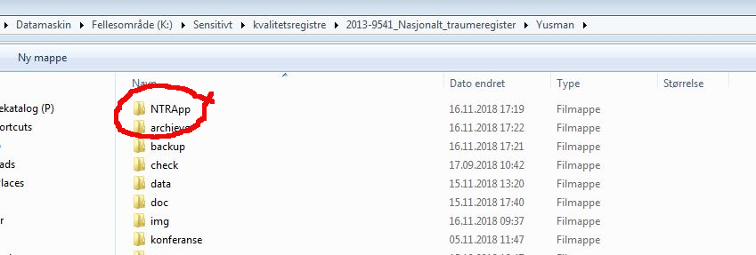
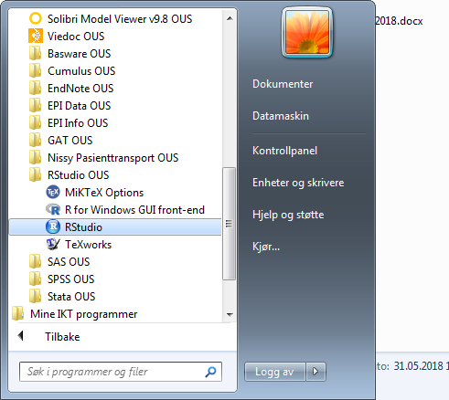
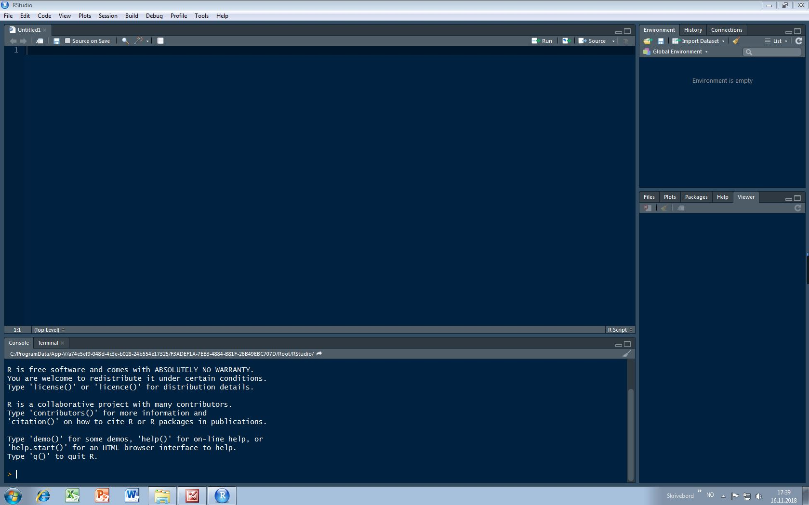
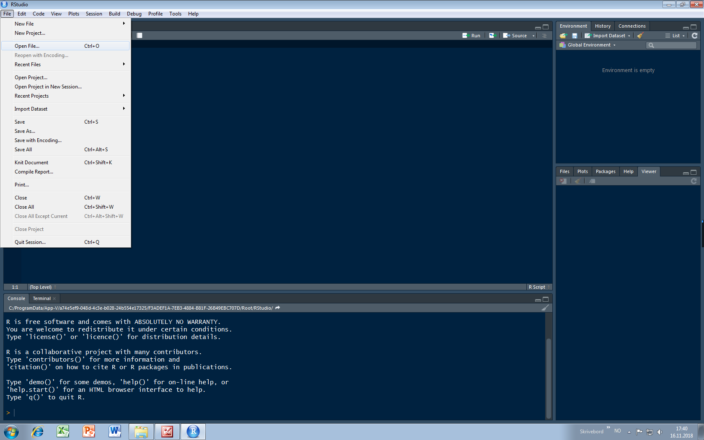
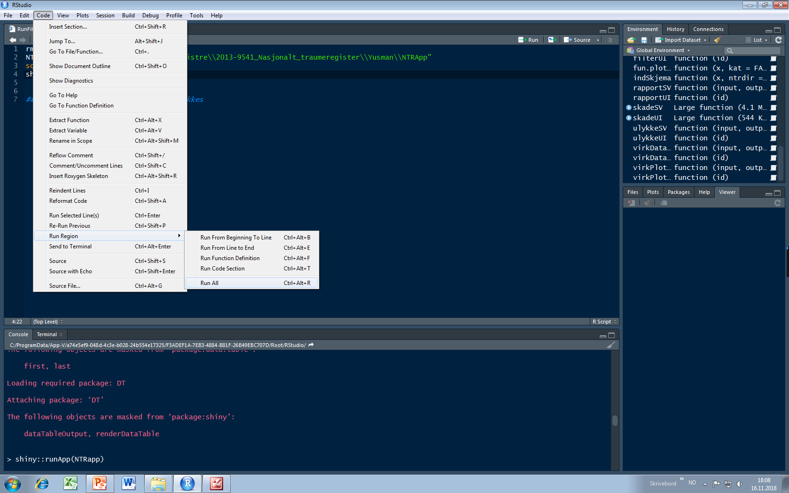

Hvordan?
Her er generell veiledning for å bruke NTR resultat lokalt. Beskrivelse i veiledningen er basert på at bruker har tilknytning til Oslo universitetssykehus nettverket. Hvis bruker hører til et annet helseforetak, kan veiledningen likevel brukes som generelle referanse for å be om assistanse fra lokal-IKT ansvarlig. Det kreves ingen spesielle kompetanse i statistisk analyser eller koding for å bruke NTR resultat. Det er bare å følge veiledningen nedenfor steg for steg.
Steg 1
Sjekk at du har tilgang til NTR mappen K: sensitivt område. Blant de mappene som ligger der, finner du en mappe som heter Yusman. Deretter finner du en mappe som heter NTRApp. Bildet under viser stien til mappen.

Steg 2
Starter opp RStudio fra startmenyen. Om programmet ikke er allerede tilgjengelig på din snarvei, kan du benytte Søk i programmer og filer for å finne RStudio.

Når du har startet programmet så ser det slik som bildet nedenfor. Fargen til bakgrunn eller tekst for koder kan varierer pga. personlige tilpasninger.

Steg 3
Når alt fungerer og du ikke får noe feil meldinger så kan du starte NTR resultat ved å finne filen RunFile.R som ligger i mappen NTRApp. For å åpne filen i RStudio, klikk File og deretter velger du Open file. Du kan da finne filen ved å følge filstien som beskreves i Steg 1 i en vanlig filsøkingsvindu.

Steg 4
Nå er det bare å kjøre NTR resultat. Denne gjør man vet å klikke Code i menyen og deretter velg Run Region og så klikk Run All. Hvis man vil heller benytte tastertur forkortelse så velge man Ctrl-Alt-R (R med stor bukstave).

Nå bør du kunne se dashbordet til NTR resultat som er lik det bildet på første siden av denne manuallen. Hvis du kjører NTR resultat for første gang så kan det ta litt lengre tid før dashbordet dykker opp fordi det skal installeres flere tillegg pakker.